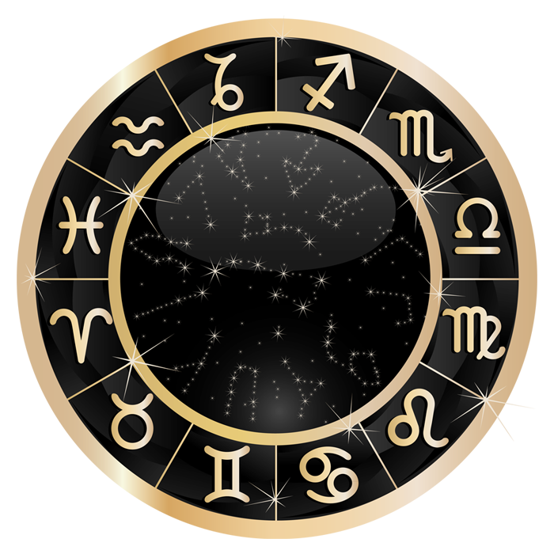

Stars
When night falls many find it comforting to look upon the night sky. The reason for this is the stars in the sky. Their beautiful dim light bring comfort to many and perhaps they also hope to get a rare glimpse of a shooting star. But what exactly are stars? Here we will look into what stars are, if there are different kinds of stars and some phenomenons surrounding them.
What is a star?
The stars in the sky are familiar to us, but did you know stars are actually a glowing ball of gas, namely helium and hydrogen being held together into a ball by its own gravity.
Gravity also plays a part in how a star is created. Stars are born when massive interstellar clouds, which are "clouds" of gas, dust and plasma in space, creates a gravitational pull strong enough that it collapses on itself forming a more compact object, a star. The total mass that the star gain determines the impact it has, as well as what happens once the star dies. If a star was large enough, it could even become a black hole upon its death.
Different Types of Stars
Shooting Stars
A Shooting star, or a falling star, is a meteor falling from the sky. It can be seen due to the high temperature caused by colliding with air molecules at a high speed. A shooting star may seem close to earth, but in reality they typically appear 75 to 100km above earth. They often fall apart at a height between 50 and 95km. Most meteors only glow for about a second so catching a glimpse is not that easy. So shooting stars are actually not stars at all.
Zodiac Signs
Click on a symbol to see information about the zodiac sign
Cancer
Dates: June 22nd-July 22nd
Cancer is the 4th zodiac sign. It is a water sign and represented by a crab.
People born under the cancer sign are known to be emotional, temperamental, and loyal.
Leo
Dates: July 23rd-August 22th
Leo is a fire sign and represented by a lion. The 5th zodiac sign.
Leo's are known to be enthusiastic, passionate, generous, and arrogant.
Virgo
Date: August 23rd-September 22nd
Virgos are an earth sign represented by a Maiden
Virgos are known to be humble, practical, kind, and anxious.
Taurus
Date: April 20th-May 20th
Taurus is an Earth sign represented by a bull.
Taurus are known to be headstrong, determined, and quick to anger.
Gemini
Dates: May 21st-June 21st
Gemini is an air sign represented by a twin symbol.
Gemini are known to be playful, curious, and are social butterflies.
Libra
Dates: September 23rd-October 23rd.
Libra is an air sign represented by some scales.
Libras are known to be extroverted, friendly, and conflict avoidant.
Scorpio
Dates: October 23rd-November 22nd
Scorpio is a water sign represented by a scorpion.
Scorpios are known to be loyal, smart, independent, and stubborn.
Sagittarius
Dates: November 22nd-December 21st
Sagittarius is a fire sign represented by the symbol of an Archer.
Sagittarius are known to be faithful, forceful, sympathetic, and intelligent.
Aquarius
Dates: January 20th-February 18th.
Aquarius is an air sign represented by a water-bearer.
Aquarius are known to be self-reliant, optimistic, and clever.
Aries
Dates: March 20th-April 21st.
Aries is a fire sign represented by a ram.
Aries are known to be passionate, motivated, and a confident leader.
Capricorn
Dates: December 21st-January 20th.
Capricorn is an earth sign represented by a Sea-Goat.
Capricorn are known to be hardworking, ambitious, and enterprising.
Pisces
Dates: February 19th-March 20th.
Pisces is a water sign represented by a Fish.
Pisces are known to be emotionally sensitive, gracious, and empathetic.